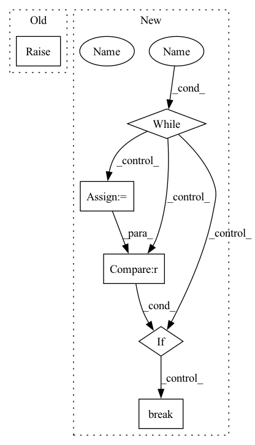

Pattern ID :9742
Before Change
super(TextMelDataLoader, self).__init__()
def run(self):
raise NotImplementedError
class MultiDataLoader(object):After Change
Load data from MelSpectrogramDataset
logger.debug("loader %d start" % self.thread_id)
while True :
items = list()
for _ in range(self.batch_size):
if self.index >= self.dataset_count:
break
text, mel_spectrogram = self.dataset.get_item(self.index)
if mel_spectrogram is not None:
items.append((text, mel_spectrogram))
self.index += 1
if len(items) == 0 :
batch = self.create_empty_batch()
self.queue.put(batch)
break
batch = self.collate_fn(items)
self.queue.put(batch)
In pattern: SUPERPATTERN
Frequency: 3
Non-data size: 6
Instances Fragment ID: 34940885
Project Name: sooftware/tacotron2
Commit Name: 8b8f7de15383d7777098052b3dd391d8875992b0
Time: 2020-10-06
Author: sh951011@gmail.com
File Name: tacotron2/data/data_loader.py
M Class Name: TextMelDataLoader
N Class Name: TextMelDataLoader
M Method Name: run(1)
N Method Name: run(1)
M Parent Class: threading.Thread
N Parent Class: threading.Thread
M File Name: tacotron2/data/data_loader.py
N File Name: tacotron2/data/data_loader.py
M Start Line: 45
M End Line: 45
N Start Line: 75
N End Line: 99
Before Change
raise NotImplementedError
def truncate_seq(self, first_seq, second_seq=None, maxlen=None):
raise NotImplementedError
def token_to_id(self, token):
raise NotImplementedErrorAfter Change
按 maxlen 截断两个序列，策略是优先从较长的一个中 pop.(pop_index)
if second_seq is None:
second_seq = []
while True :
total_length = len(first_seq) + len(second_seq)
if total_length <= maxlen :
break
elif len(first_seq) > len(second_seq):
first_seq.pop(pop_index)
else:
second_seq.pop(pop_index) Fragment ID: 34940884
Project Name: xv44586/toolkit4nlp
Commit Name: 0bf79d28404d2804b16e8ed743858fb121d49f20
Time: 2020-07-18
Author: xv44586@163.com
File Name: toolkit4nlp/tokenizers.py
M Class Name: BasicTokenizer
N Class Name: BasicTokenizer
M Method Name: truncate_seq(5)
N Method Name: truncate_seq(4)
M Parent Class: object
N Parent Class: object
M File Name: toolkit4nlp/tokenizers.py
N File Name: toolkit4nlp/tokenizers.py
M Start Line: 165
M End Line: 165
N Start Line: 212
N End Line: 225
Before Change
raise NotImplementedError
def truncate_seq(self, first_seq, second_seq=None, maxlen=None):
raise NotImplementedError
def token_to_id(self, token):
raise NotImplementedErrorAfter Change
按 maxlen 截断两个序列，策略是优先从较长的一个中 pop.(pop_index)
if second_seq is None:
second_seq = []
while True :
total_length = len(first_seq) + len(second_seq)
if total_length <= maxlen :
break
elif len(first_seq) > len(second_seq):
first_seq.pop(pop_index)
else:
second_seq.pop(pop_index) Fragment ID: 34940882
Project Name: xv44586/toolkit4nlp
Commit Name: be67410e44e5fa777976bec4d242af8411a31adf
Time: 2020-07-18
Author: xv44586@163.com
File Name: toolkit4nlp/tokenizers.py
M Class Name: BasicTokenizer
N Class Name: BasicTokenizer
M Method Name: truncate_seq(5)
N Method Name: truncate_seq(4)
M Parent Class: object
N Parent Class: object
M File Name: toolkit4nlp/tokenizers.py
N File Name: toolkit4nlp/tokenizers.py
M Start Line: 165
M End Line: 165
N Start Line: 212
N End Line: 225